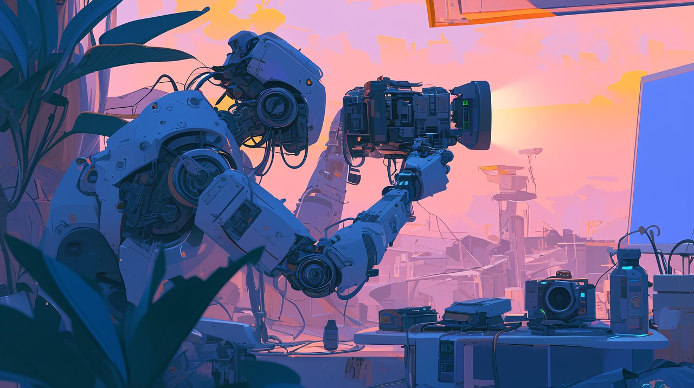

Hi, I'm Sergio López! 
I am a filmmaker passionate about science fiction and immersive storytelling. Currently exploring the metaverse and emerging technologies as new frontiers for cinematic expression. I’m especially interested in tools that blend film with interactivity—where the line between viewer and participant continues to blur. My goal is to help shape the future of storytelling through innovation and experimentation.